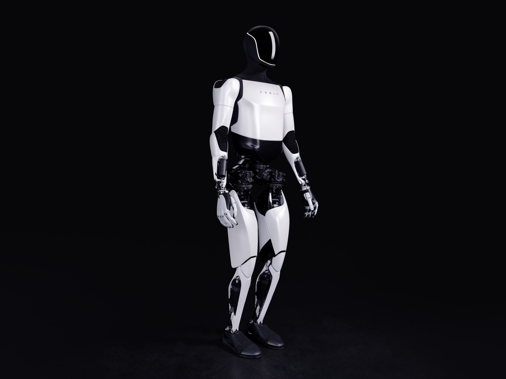

Optimus项目总览（含2026生产进展，未绑定代际）
特斯拉 · 双足人形 · 状态待核实
Optimus项目总览；此入口不对应某一代整机。可切换下方2021概念、2022设计原型和2023 Gen 2记录。2026-01官方定义Gen 3为面向量产的设计；2026-10更新称Fremont已开始生产，但未将每批硬件明确绑定Gen 3代号或给出完整规格，不能据此认定已向客户普遍交付。图片来自同一官网 Optimus 概述，仅作代际未注明的展示，不代表最新量产版本。

完整规格与依据
身体规格
- 身高
- 待核实
【代际未绑定】项目总览不对应单一整机。2021概念172.72 cm仅在概念条目，不填作2026量产机高度。
本项资料核验 2026-10-24；相关链接不表示厂商从未披露。 - 整机重量
- 待核实
【代际未绑定】2021概念125 lb不等于Gen 2/Gen 3重量；2022 Human Form的73 kg是人体参照，明确排除。
本项资料核验 2026-10-24；相关链接不表示厂商从未披露。 - 自由度
- 待核实
【口径不兼容】2021的40是机电执行器、2022的28是结构执行器，均非已核对的当前全机DoF；手部数字也不能直接相加。
本项资料核验 2026-10-24；相关链接不表示厂商从未披露。 - 末端执行器
- 待核实
【代际未绑定】2023 Gen 2字幕11 DoF；2024更新仅确认手部相对2倍；2026-01定义Gen 3采用新手，但本轮未核实其绝对DoF与生产批次BOM。
本项资料核验 2026-10-24；相关链接不表示厂商从未披露。
运动与操作
- 操作负载
- 待核实
【代际不匹配】2021的45 lb携带/10 lb伸臂均为概念目标；不能直接作Gen 2或2026生产整机的额定操作负载。
本项资料核验 2026-10-24；相关链接不表示厂商从未披露。 - 移动速度
- 待核实
【仅相对变化】Gen 2原帧只给步速相对提升30%；2021的5 mph是概念目标，不可当同版基准逆推当前速度。
本项资料核验 2026-10-24；相关链接不表示厂商从未披露。
电池与工作
- 工作时间
- 待核实
【本轮未找到】已读2026 Gen 3定义和生产进展，没有取得带任务/负载条件的单电池工作小时；生产线进度不是续航。
本项资料核验 2026-10-24；相关链接不表示厂商从未披露。 - 电池能量
- 待核实
【代际不匹配】已找到2022设计2.3 kWh，单列历史条目；未核实Gen 2/Gen 3或当前产线包沿用相同能量。
本项资料核验 2026-10-24；相关链接不表示厂商从未披露。 - 电池容量
- 待核实
【本轮未找到】已查当前项目/季度更新，未取得可绑定当前整机的Ah/mAh与标称电压；不把2022 Wh换名填入。
本项资料核验 2026-10-24；相关链接不表示厂商从未披露。
感知与开发
- 感知配置
- 待核实
【代际未绑定】Gen 2有手指触觉和足部力/力矩；当前生产批次的完整传感器型号/数量尚未取得，不继承旧代BOM。
本项资料核验 2026-10-24；相关链接不表示厂商从未披露。 - 计算平台
- 待核实
【配置归属未明】2022原型为1颗Tesla SoC；公司新推理芯片研发进度不证明当前Optimus已安装某一AI5/AI6板卡。
本项资料核验 2026-10-24；相关链接不表示厂商从未披露。 - 二次开发
- 待核实
【本轮未找到】项目与IR资料未确认客户可用的公开SDK、接口层级及授权范围；不把汽车或AI训练工具当机器人开发包。
本项资料核验 2026-10-24；相关链接不表示厂商从未披露。
采购信息
- 美元报价
- 待核实
【报价待采集】所查资料没有绑定代际/交付地区的美元整机采购条款；目标售价/生产成本不当可执行报价。
本项资料核验 2026-10-24；相关链接不表示厂商从未披露。 - 人民币报价
- 待核实
【报价待采集】本轮未取得人民币整机报价；美元目标成本/融资估值不换汇当售价。
本项资料核验 2026-10-24；相关链接不表示厂商从未披露。
同型号的其他配置 / 代际
- Optimus 2021概念目标（非实测）特斯拉 · 双足人形
- Optimus 2022 AI Day设计原型特斯拉 · 双足人形
- Optimus Gen 2（2023-12发布）特斯拉 · 双足人形